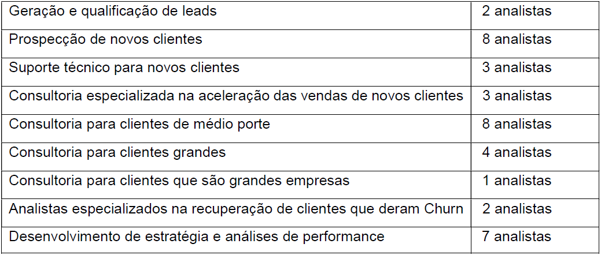
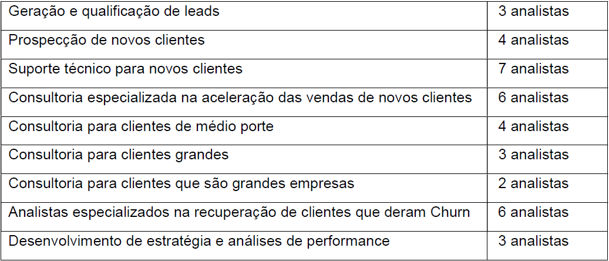

Os ventos ao nosso favor
Projeto de análise dos dados de uma turbina eólica e os fatores que influenciam na produção de energia


A base de dados possui 50.530 observações de uma turbina eólica e apresenta algumas características:
- Data/Hora: Observações a cada 10 minutos durante todo o ano de 2018;
- Energia Produzida: Energia gerada pela turbina;
- Velocidade do vento: Velocidade do vento lida na turbina, que é onde é produzida a energia;
- Curva teórica: Energia que seria produzida se todas as condições ideais fossem atingidas. Esse valor é fornecido pelo fabricante;
- Direção do Vento: A direção do vento na turbina (a turbina é rotacionada automaticamente).
Para compreender melhor este relatório, convido você a acessar o dashboard feito para demonstar essa análise clicando no link abaixo.
Dashboard de vendasConsiderações Iniciais
Em um mundo onde consome-se cada vez mais energia, é necessária uma diversificação da matriz energética e ainda uma transição das fontes fósseis para fontes renováveis, como é o caso da energia eólica. Dessa forma, a energia eólica torna-se uma grande aliada nesse processo, pois é uma fonte abundante e que não polui o meio ambiente. No entanto, nem tudo são flores.
Apesar de ser uma fonte inesgotável, conta com uma impressibilidade visto que ainda não possível prever a natureza com precisão. O objetivo desta análise é tentar encontrar os principais fatores que influenciam na produção da energia e com isso otimizar o processo de produção através da elaboração de um cronograma de manutenção que interfira minimamente no processo e, também, observar tendências e fatores que possam influenciar em futuros projetos.
Por fim, será elaborado um modelo de regressão linear com o intuito de prever a produção de energia trazendo maior previsibilidade para o sistema e clareza para a concessionária que produz a energia.
Ao longo da análise, foram constatados alguns problemas que poderiam prejudicar a análise e, consequentemente, levar a conclusões distorcidas. A base apresentou uma alta concentração de vendas no Brasil (cerca de 95%) sendo o restante das vendas distribuídas em mais de 70 países. Portanto, foi estabelecido um filtro no dashboard de modo que seja possível separar o Brasil dos outros países.
Tratamento dos dados
A base não possui valores nulos, porém apresentou alguns outliers nos valores de velocidade do vento, o que é compreensível tendo em vista que as condições climáticas não são completamente previsíveis.
Cronograma de manutenção
Um cronograma de manutenção faz-se necessário não apenas por uma questão de planejamento, mas sim porque a fonte não é controlável.
Foi constatado que o limiar de produção de energia é entre 3 e 4 m/s, no entanto observações com valores de velocidade de vento acima disso também apareceram. Além disso, esses valores de velocidade de vento concentram-se nos meses de dezembro a fevereiro que são meses com uma produção próxima da média geral de produção que é 1307,68 kW.
Os gráficos abaixo sugerem que os meses de menor produção energética são: Abril, Maio, Junho e Julho; já as horas com menor produção energética estão no intervalo entre 04hrs e 15 hrs. Com isso, é possível elaborar um cronograma de manutenção que seja dentro destes meses, mas caso seja necessário realizar nos meses de maior produção energética então que seja feita durante o dia para maximizar a produção energética.
Atendimento da potência para a curva teórica
Estrutura atual:

Alocação correta do tim
Considerando que o número de clientes vem crescendo ao longo do tempo, o foco do time deveria ser nos setores: OB Tech, OB Consult e Recover. O foco nesses times justifica-se pelo fato de as métricas de vendas apresentarem um alto índice de churn por vendas, principalmente nos clientes de pequeno porte (First Sales e Atom). Com esses três setores recebendo uma atenção especial, é possível que haja um aumento na retenção dos clientes na plataforma.
A quantidade de pessoas no time, inicialmente, não sofreria alteração a fim de que se avaliasse a performance dessa nova distribuição de analistas para posteriormente aumentar a equipe. Dessa forma, é possível fazer o direcionamento de novas pessoas para os setores adequados evitando o gasto desnecessário com o treinamento de pessoal para funções erradas.
Proposta de alocação de pessoal:

Métricas
Seria necessário avaliar se foi possível reverter os clientes que deram churn, se o ritmo de crescimento de usuários foi mantido e se o churn dos clientes pequenos ou com poucas vendas diminuiu. Seria interessante acompanhar os indicadores sociais dos países, pois como o Brasil representa a maior parte da amostra não é possível afirmar com clareza que indicadores sociais não influenciam nas vendas.
Plano para expansão internacional
O melhor plano para expansão seria a empresa focar nos continentes onde não existem escritórios (Asia e África), porque os dados refletem que os escritórios europeus atendem toda a demanda nessas regiões. Cabe um destaque para o continente asiático, já que ele apresenta um bom nível de retenção mesmo com um baixo volume de vendas, além de que as vendas foram operacionalizadas pelo escritório europeu, ou seja, mesmo sendo feitas por escritórios distantes as vendas apresentam baixo churn.
Ambos os continentes possuem vantagens e desvantagens. A Asia tem um alto desenvolvimento tecnológico, porém a empresa enfrentaria uma alta concorrência com as grandes empresas já consolidadas no setor. Já na África, poderia ser necessário a empresa readequar a tecnologia para atender a demanda em função dos problemas logísticos, tecnológicos e humanitários que a região enfrenta.
Vale ressaltar que a Ásia seria mais interessante em virtude da maturidade tecnológica. Com foco em localidades como Japão, Macau e Singapura, já que esses lugares apresentam bons níveis de retenção de clientes.
Conclusões
Após essa análise, foi possível constatar alguns problemas operacionais os quais podem ser a causa da alta taxa de churn. Porém, feita a reestruturação do time, o direcionamento das demandas para os escritórios adequados e a tentativa de estender os benefícios dos clientes grandes para os pequenos seria necessário analisar os próximos meses para observar a efetividade das mudanças.
Agradeço você por ter lido até aqui e até mais.